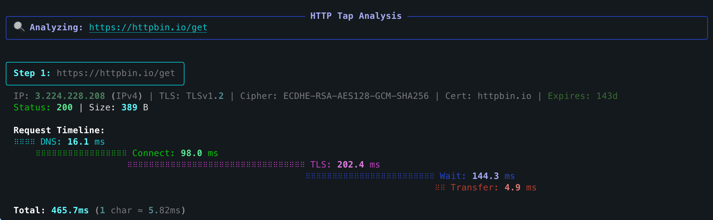

httptap¶


httptap is a rich-powered CLI that dissects an HTTP request into every meaningful phase—DNS, TCP connect, TLS
handshake, server wait, and body transfer—and renders the results as a timeline table, compact summary, or
machine-friendly metrics. It is designed for interactive troubleshooting, regression analysis, and recording of
performance baselines.
Special Offer
 Save 50% on GitKraken Pro
Save 50% on GitKraken Pro
Exclusive for httptap community
Highlights¶
- Phase-by-phase timing – precise measurements built from httpcore trace hooks (with sane fallbacks when metal-level data is unavailable)
- All HTTP methods – GET, POST, PUT, PATCH, DELETE, HEAD, OPTIONS with request body support
- Request body support – send JSON, XML, or any data inline or from file with automatic Content-Type detection
- IPv4/IPv6 aware – the resolver and TLS inspector report both the address and its family
- TLS insights – certificate CN, expiry countdown, cipher suite, and protocol version are captured automatically
- Multiple output modes – rich waterfall view, compact single-line summaries, or
--metrics-onlyfor scripting - JSON export – persist full step data (including redirect chains) for later processing
- Extensible – clean Protocol interfaces for DNS, TLS, timing, visualization, and export so you can plug in custom behavior
Quick Examples¶
GET request:
POST with JSON data:

Key Features¶
Rich Waterfall Visualization¶
View detailed timing breakdown for each phase of the HTTP request with a beautiful terminal UI powered by Rich.
Multiple Output Formats¶
- Rich mode (default): Beautiful waterfall table with colors and formatting
- Compact mode (
--compact): Single-line summaries suitable for logs - Metrics mode (
--metrics-only): Raw metrics for scripting and automation - JSON export (
--json): Full request data including redirect chains
Advanced Network Insights¶
- DNS resolution timing with IP family detection (IPv4/IPv6)
- TCP connection establishment timing
- TLS handshake analysis with certificate information
- Time to first byte (TTFB) measurement
- Response body transfer timing
Redirect Chain Support¶
Follow HTTP redirects and see timing breakdown for each step in the chain with --follow flag.
What's Next?¶
-
Get started with httptap in seconds
-
Learn the basics with simple examples
-
Explore all features and options
-
Extend httptap with custom components
Requirements¶
- Python 3.10-3.14
- macOS, Linux, or Windows
- No system dependencies beyond standard networking
License¶
Apache License 2.0 © Sergei Ozeranskii
Connect¶
Follow the author for insights from real-world experience:
- Telegram Channel - Development, DevOps, architecture, and security. Real experience and practical insights without fluff.
- GitHub - Open source projects and contributions
Acknowledgements¶
Built on the shoulders of fantastic libraries: